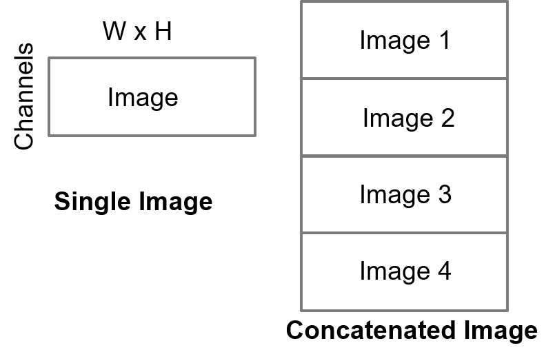

Introduction
- Batch processing feature can improve the performance of DNN on small resolution input by stitching and processing the small resolution inputs together. This page shall explain usage of this feature in TIDL-RT import and inference
List of Import Configuration Parameters - Batch Processing
| Parameter | Default | Description |
| numBatches | 1 | Number of batches to processed together, it can take values >= 1 |
| inData | | File containing input tensors to process, Refer below IO Tensor formats section |
List of Infer Configuration Parameters - Batch Processing
| Parameter | Default | Description |
| inData | | File containing input tensors to process, Refer below IO Tensor formats section |
| outData | | File containing output tensors to consume, Refer below IO Tensor formats section |
IO Tensor formats - Batch Processing
- To enable batch processing feature set "numBatches to >1" in the import config file. For 224x224 resolution network, if user sets numBatches = 4, it means 4 images will be processed together so user need to concat 4 input images together and provide the concatenated input in the "inData" parameter of the import and infer config files
- The below image describes properties of concatenated image with 4 batches (Both input and output).

TIDL Input Output Tensor - 4 Batches
- The output also is in the same format as the input, so output for each image needs to be extracted from this concatenated output image indicated by "outData" parameter in the infer config file
Performance improvement with Batch processing
- By enabling batch processing, users can see performance improvement of 30% to 50% in many neural networks (with small input resolution size of 224x224)
 1.8.14
1.8.14